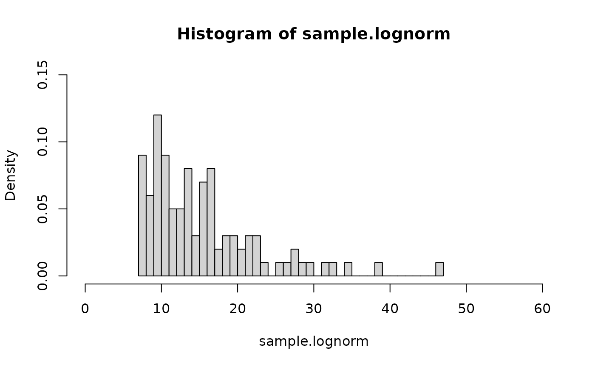
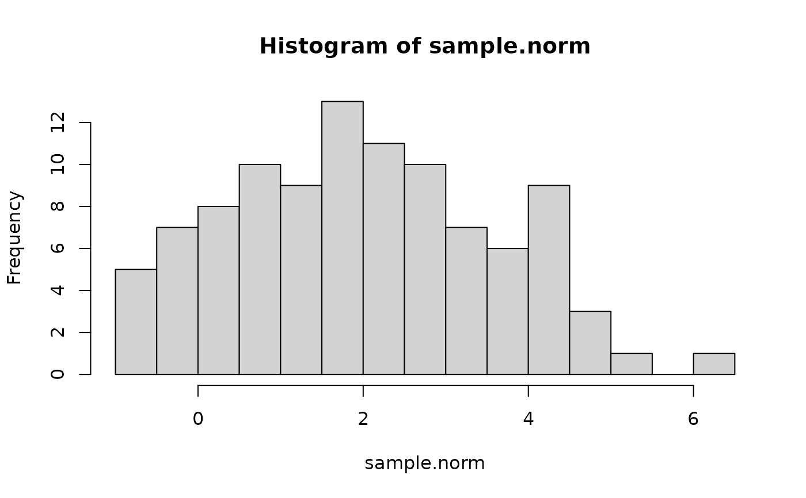
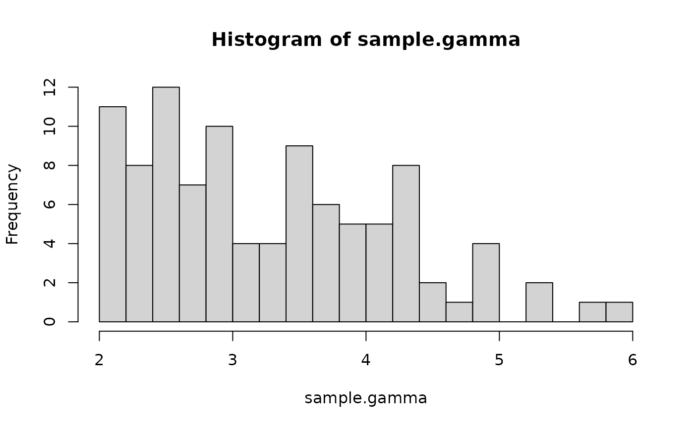

Random generation for the truncated exponential family distributions. Please refer to the "Details" and "Examples" section for more information on how to use this function.
Usage
rtruncbeta(n, shape1, shape2, a = 0, b = 1, faster = FALSE)
rtruncbinom(n, size, prob, a = 0, b = size, faster = FALSE)
rtruncchisq(n, df, a = 0, b = Inf, faster = FALSE)
rtrunccontbern(n, lambda, a = 0, b = 1, faster = FALSE)
rtruncexp(n, rate = 1, a = 0, b = Inf, faster = FALSE)
rtruncgamma(n, shape, rate = 1, scale = 1/rate, a = 0, b = Inf, faster = FALSE)
rtruncinvgamma(
n,
shape,
rate = 1,
scale = 1/rate,
a = 0,
b = Inf,
faster = FALSE
)
rtruncinvgauss(n, m, s, a = 0, b = Inf, faster = FALSE)
rtrunclnorm(n, meanlog, sdlog, a = 0, b = Inf, faster = FALSE)
rtruncnbinom(n, size, prob, mu, a = 0, b = Inf, faster = FALSE)
rtruncnorm(n, mean, sd, a = -Inf, b = Inf, faster = FALSE)
rtruncpois(n, lambda, a = 0, b = Inf, faster = FALSE)
rtrunc(n, family = "gaussian", faster = FALSE, ...)
rtrunc_direct(n, family = "gaussian", parms, a, b, ...)Arguments
- n
sample size
- shape1
positive shape parameter alpha
- shape2
positive shape parameter beta
- a
point of left truncation. For discrete distributions,
awill be included in the support of the truncated distribution.- b
point of right truncation
- faster
if
TRUE, samples directly from the truncated distribution (more info in details)- size
target for number of successful trials, or dispersion parameter (the shape parameter of the gamma mixing distribution). Must be strictly positive, need not be integer.
- prob
probability of success on each trial
- df
degrees of freedom for "parent" distribution
- lambda
mean and var of "parent" distribution
- rate
inverse gamma rate parameter
- shape
inverse gamma shape parameter
- scale
inverse gamma scale parameter
- m
vector of means
- s
vector of dispersion parameters
- meanlog
mean of untruncated distribution
- sdlog
standard deviation of untruncated distribution
- mu
alternative parametrization via mean
- mean
mean of parent distribution
- sd
standard deviation is parent distribution
- family
distribution family to use
- ...
individual arguments to each distribution
- parms
list of parameters passed to rtrunc (through the
...element)
Value
A sample of size n drawn from a truncated distribution
vector of one of the rtrunc_* classes containing the sample
elements, as well as some attributes related to the chosen distribution.
Details
One way to use this function is by calling the rtrunc
generic with the family parameter of your choice. You can also
specifically call one of the methods (e.g. rtruncpois(10, lambda=3)
instead of rtrunc(10, family="poisson", lambda=3)). The latter is more flexible (i.e., easily programmable) and more robust (i.e., it contains better error handling and validation procedures), while the former better conforms with the nomenclature from other distribution-related functions in the stats` package.
Setting faster=TRUE uses a new algorithm that samples directly from
the truncated distribution, as opposed to the old algorithm that samples
from the untruncated distribution and then truncates the result. The
advantage of the new algorithm is that it is way faster than the old one,
particularly for highly-truncated distributions. On the other hand, the
sample for untruncated distributions called through rtrunc() will no longer
match their stats-package counterparts for the same seed.
Note
The current sample-generating algorithm may be slow if the distribution is largely represented by low-probability values. This will be fixed soon. Please follow https://github.com/ocbe-uio/TruncExpFam/issues/72 for details.
Examples
# Truncated binomial distribution
sample.binom <- rtrunc(
100, family = "binomial", prob = 0.6, size = 20, a = 4, b = 10
)
sample.binom
#> [1] 9 10 10 8 9 10 10 9 10 10 10 10 8 8 9 10 10 8 10 9 8 10 10 8 10
#> [26] 10 10 10 10 10 10 9 9 10 9 8 10 10 10 10 9 8 9 10 9 10 10 10 10 9
#> [51] 8 8 8 10 9 9 8 7 9 10 10 10 10 9 10 9 9 10 9 9 8 10 8 8 9
#> [76] 8 9 7 10 10 9 10 9 9 10 10 9 10 8 8 10 8 9 10 9 10 10 9 10 6
plot(
table(sample.binom), ylab = "Frequency", main = "Freq. of sampled values"
)
# Truncated Log-Normal distribution
sample.lognorm <- rtrunc(
n = 100, family = "lognormal", meanlog = 2.5, sdlog = 0.5, a = 7
)
summary(sample.lognorm)
#> Min. 1st Qu. Median Mean 3rd Qu. Max.
#> 7.084 9.978 12.802 14.479 17.098 37.415
hist(
sample.lognorm,
nclass = 35, xlim = c(0, 60), freq = FALSE,
ylim = c(0, 0.15)
)

# Normal distribution
sample.norm <- rtrunc(n = 100, mean = 2, sd = 1.5, a = -1)
head(sample.norm)
#> [1] 0.1296887 4.2967368 1.8746188 0.5806818 1.6137195 1.2112815
hist(sample.norm, nclass = 25)

# Gamma distribution
sample.gamma <- rtrunc(n = 100, family = "gamma", shape = 6, rate = 2, a = 2)
hist(sample.gamma, nclass = 15)

# Poisson distribution
sample.pois <- rtrunc(n = 10, family = "poisson", lambda = 10, a = 4)
sample.pois
#> [1] 8 6 9 7 15 9 14 14 6 11
plot(table(sample.pois))